Explore the sensors
From measuring temperature to detecting motion, find the right sensor for every signal.
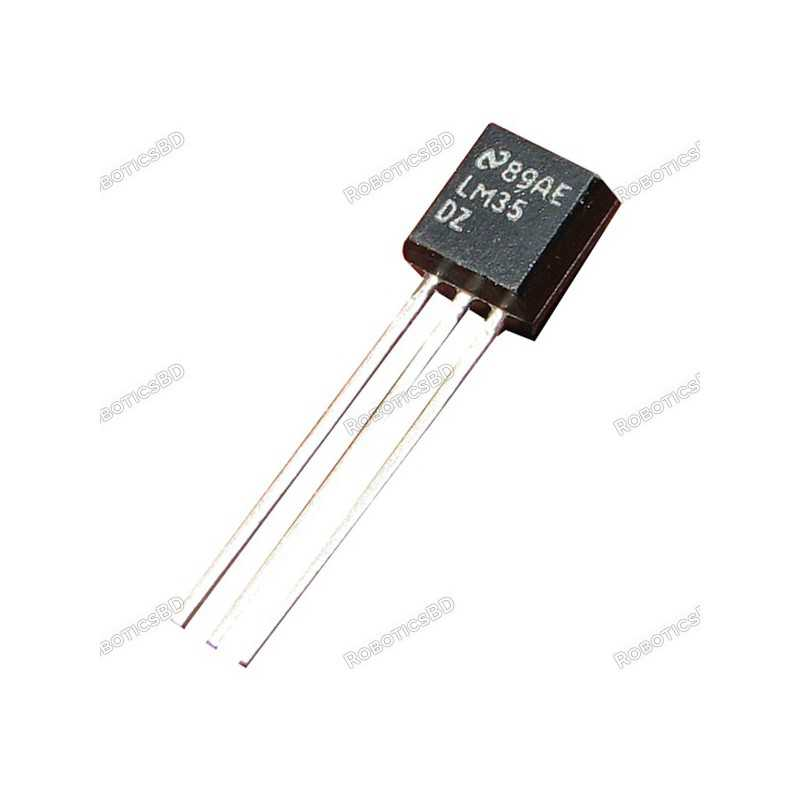
Temperature-Sensor
A temperature sensor is an electronic component used to measure thermal changes in the environment. Popular models like the LM35 provide high precision and accuracy for detecting temperature. These sensors are widely used in HVAC and climate control applications.
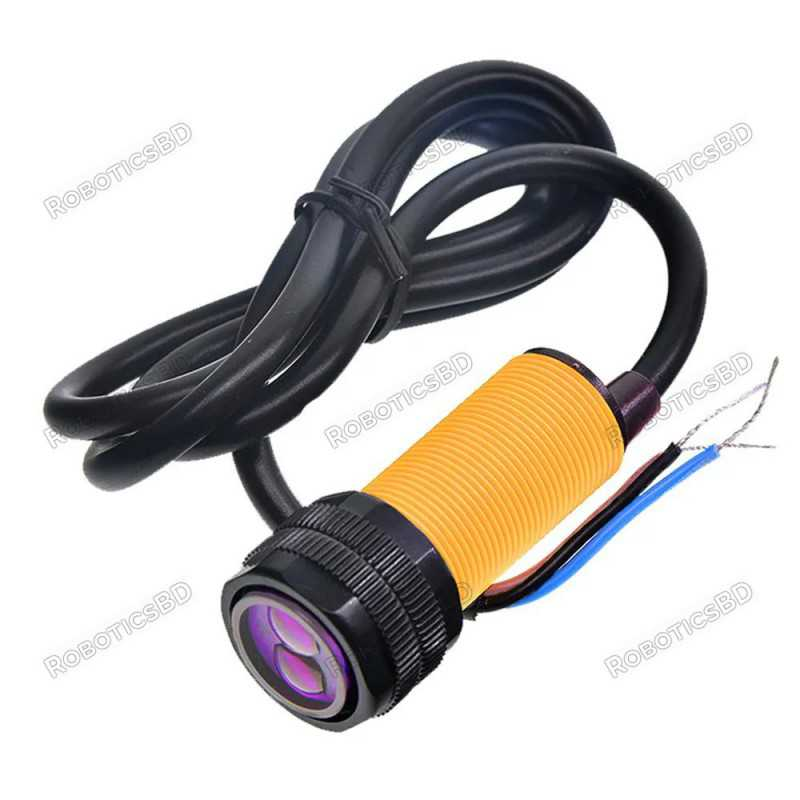
Proximity-Sensor
A proximity sensor is an electronic device designed to detect the presence, absence, or movement of nearby objects without any physical contact. It typically relies on technologies such as infrared light beams, ultrasonic waves, or electromagnetic fields to sense targets within a specific operating range. These sensors are widely utilized in industrial automation, robotics, mobile devices, and safety systems.
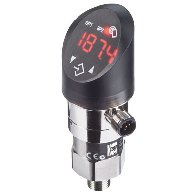
Pressure-Sensor
A pressure sensor is an electronic device used to measure the pressure of gases or liquids within a given system. Popular models like the BMP280 provide high precision and accuracy for monitoring atmospheric or fluid changes. These sensors are widely implemented in weather stations, HVAC systems, and altimeters.
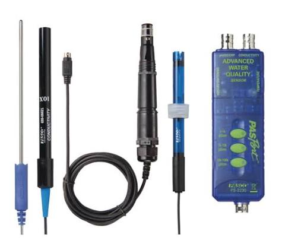
Water-Quality-Sensor
A water quality sensor is an electronic device used to monitor and measure physical and chemical parameters such as pH, turbidity, conductivity, and dissolved oxygen in water bodies. It translates these water characteristics into electrical signals for real-time analysis and environmental monitoring. These sensors are widely utilized in aquaculture, water treatment plants, hydroponics, and ecological research.
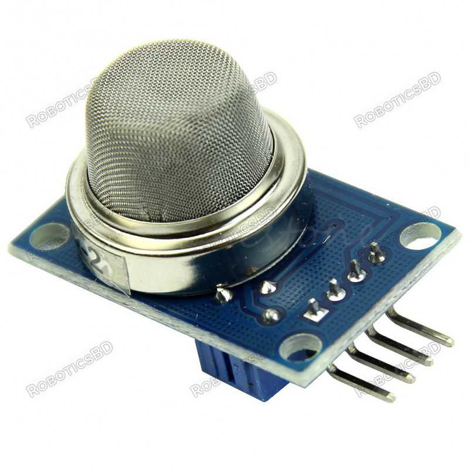
Flammable-Gas-Smoke-Sensor
A flammable gas and smoke sensor is an electronic device used to detect the presence of flammable gases or smoke in the environment. These sensors are widely utilized in fire safety systems, industrial applications, and residential settings to provide early warning of potential hazards.
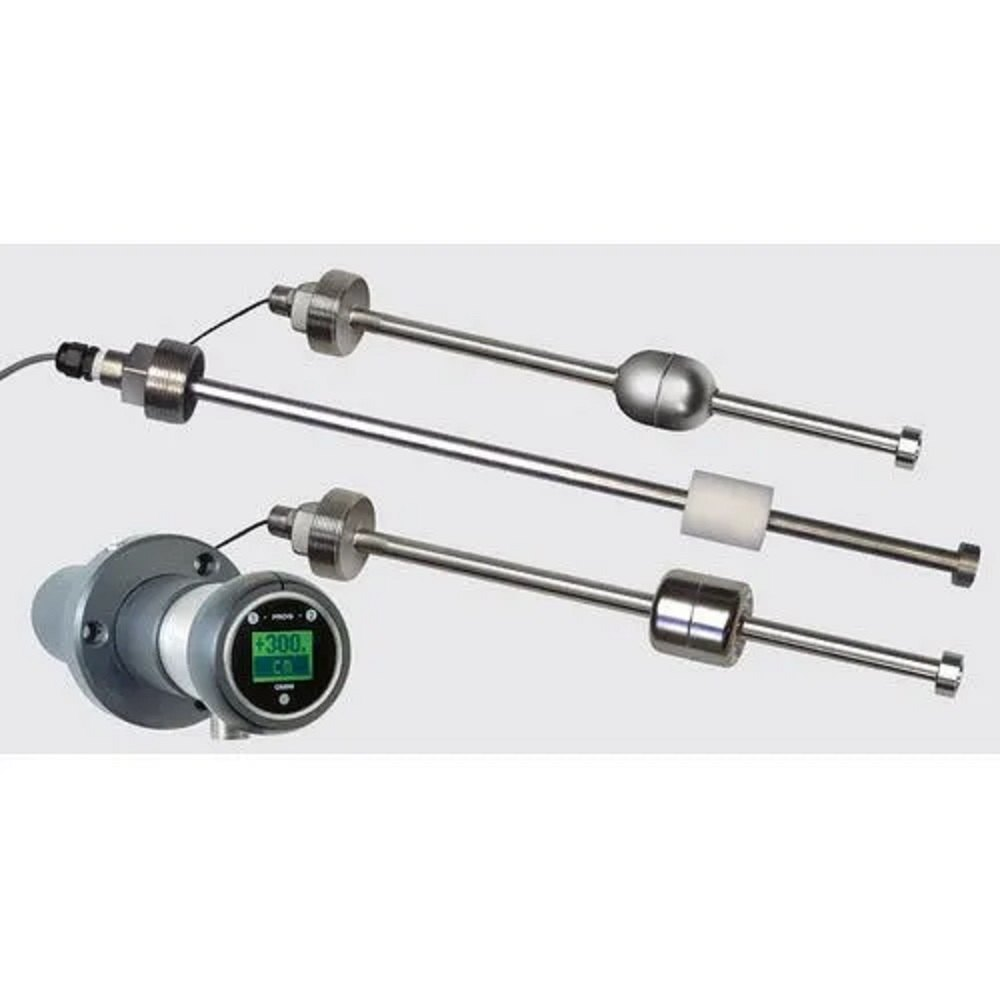
Liquid-Level-Sensor
A liquid level sensor is an electronic device used to measure the level of liquid in a container or tank. These sensors are widely utilized in industrial applications, such as in chemical processing, oil and gas, and water treatment plants, to ensure optimal operation and safety.
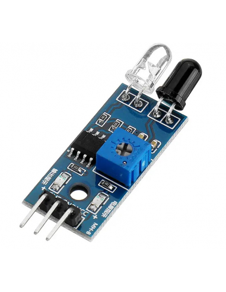
Infrared-Sensor
A infrared sensor is an electronic device used to detect infrared radiation from objects. These sensors are widely utilized in remote controls, security systems, and thermal imaging applications.
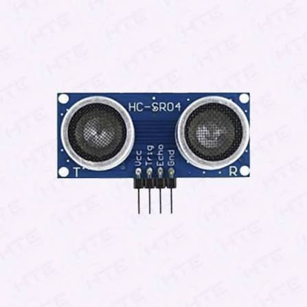
Ultrasonic-Sensor
A ultrasonic sensor is an electronic device used to measure distances by emitting high-frequency sound waves and detecting their echoes. These sensors are widely utilized in parking assistance systems, industrial automation, and robotics.
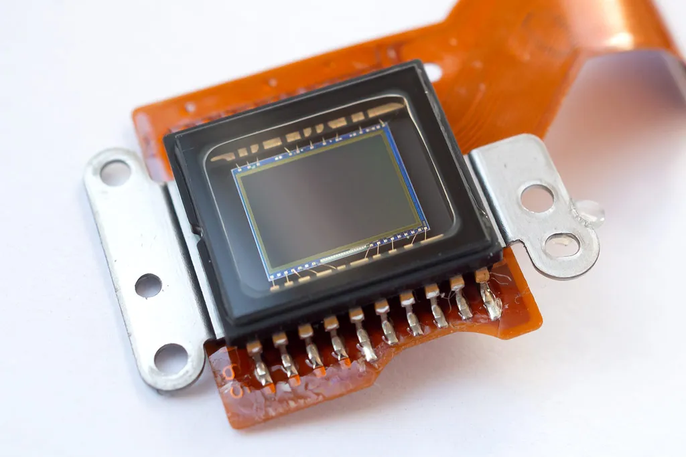
Image-Sensor
A image sensor is an electronic device used to capture and convert light into an electrical signal. These sensors are widely utilized in digital cameras, smartphones, and surveillance systems.
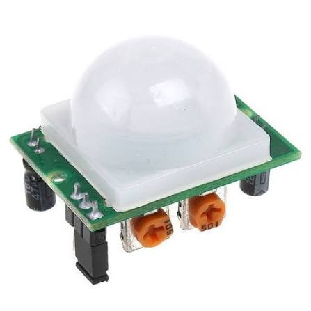
Motion-Detection-Sensor
A motion detection sensor is an electronic device used to detect movement within a specific area. These sensors are widely utilized in security systems, home automation, and wildlife monitoring applications.
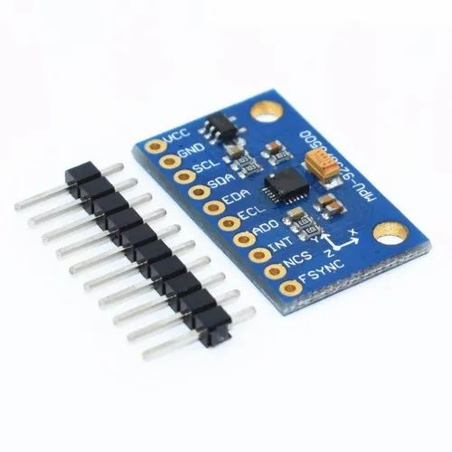
Accelerometer-Sensor
A accelerometer sensor is an electronic device used to measure acceleration forces. These sensors are widely utilized in smartphones, gaming consoles, and automotive safety systems.
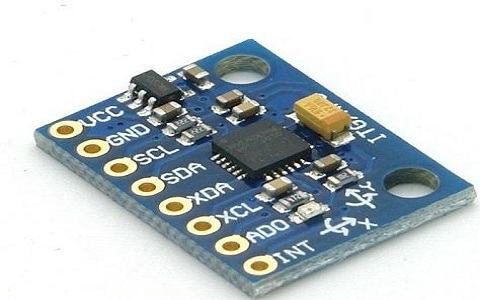
Gyroscope-Sensor
A gyroscope sensor is an electronic device used to measure angular velocity and orientation. These sensors are widely utilized in smartphones, drones, and virtual reality applications.
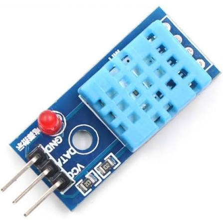
Humidity-Sensor
A humidity sensor is an electronic device used to measure the amount of moisture in the air. These sensors are widely utilized in weather stations, HVAC systems, and agricultural applications.
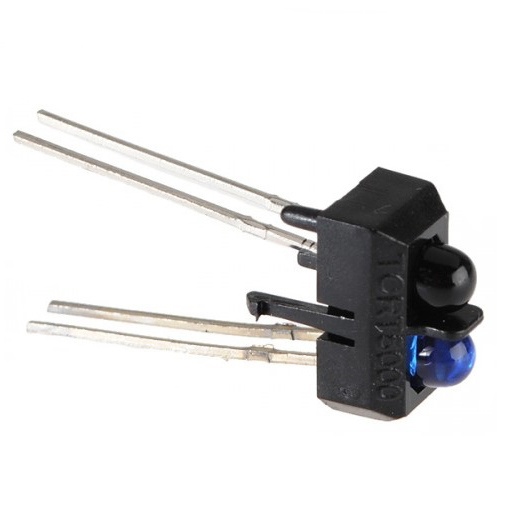
Optical-Sensor
A optical sensor is an electronic device used to detect and measure light. These sensors are widely utilized in digital cameras, barcode scanners, and industrial automation applications.